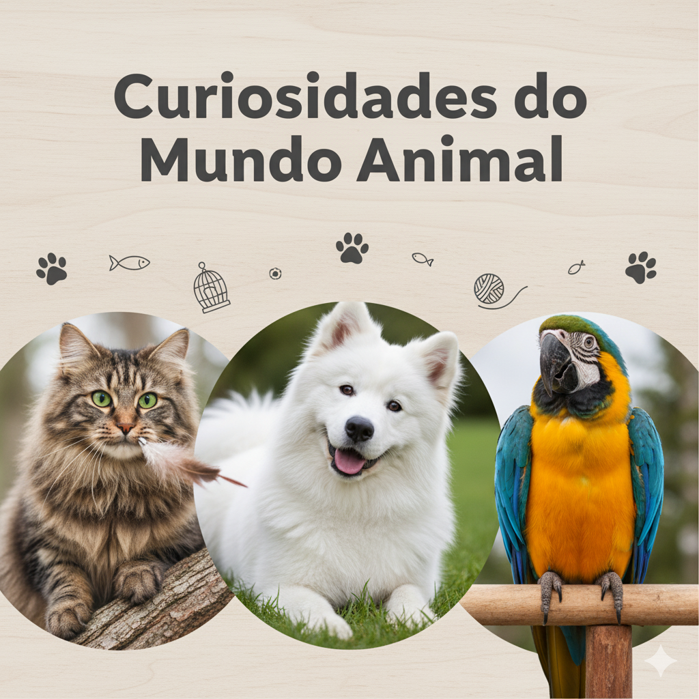

Curiosidades do Mundo Animal
- As impressões digitais do focinho de um cachorro são únicas, assim como as nossas digitais.
- Gatos podem fazer cerca de 100 sons diferentes. Cães fazem apenas cerca de 10.
- Os dentes de um coelho nunca param de crescer.
- Calopsitas são capazes de imitar sons e até mesmo pequenas palavras.
- Um grupo de gatos é chamado de "gataria".